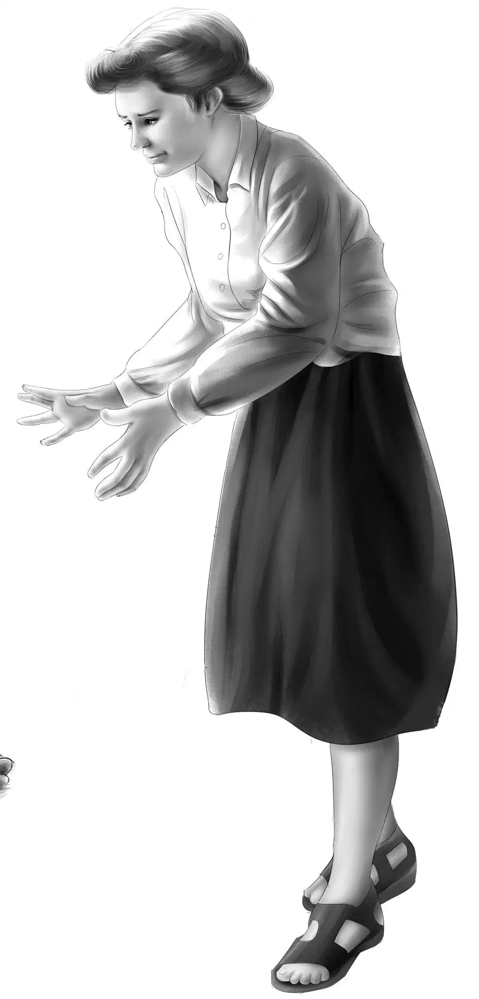
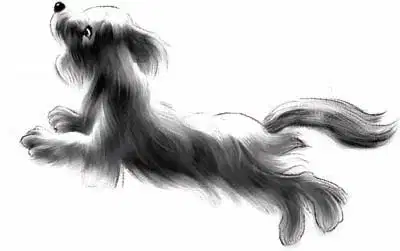
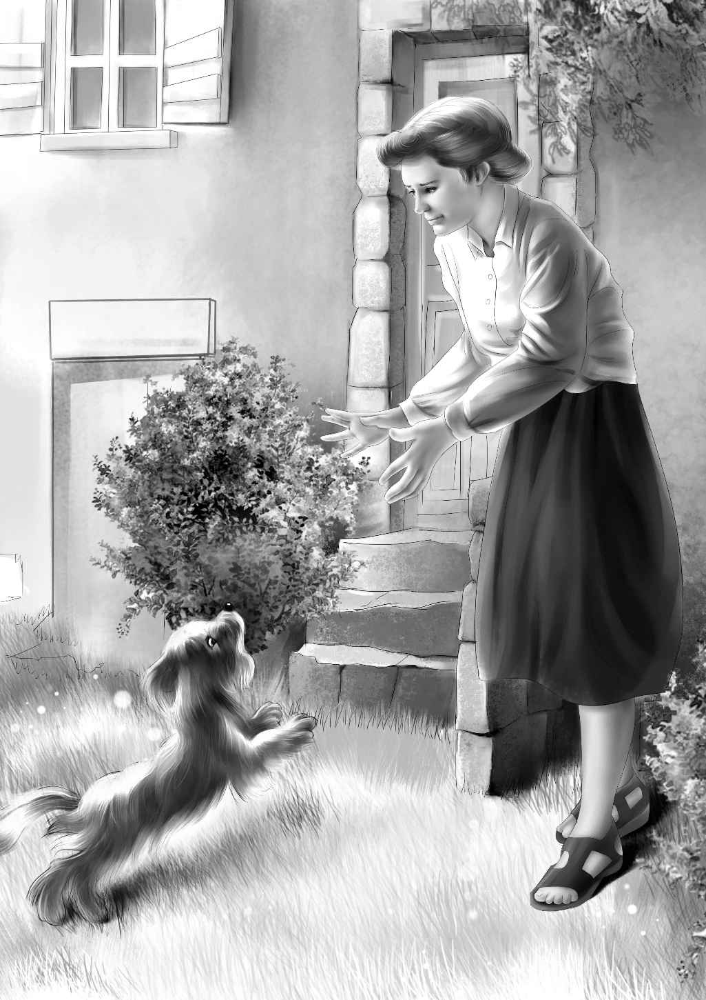

Now the Aldens wanted nothing but to get home with the dog. They agreed not to stop anywhere except to eat and sleep.
Violet said, “We must say hello to Mrs. Randall, though. We go right through Second Landing.”
Jessie said, “Let’s do that. We told her we might.”
They rode along steadily for the rest of the trip. On the last morning it was almost lunchtime when Shadow started to run away.
“Come back!” shouted Benny. But Shadow had no idea of coming back.
Benny yelled,“I thought you were an obedient dog. Don’t you understand? Come back!”
Shadow was not listening. He was running for dear life.
Henry watched him for a minute. Then he said quietly, “We must follow him. We can’t lose him now.”
The four children pedaled away until they caught up with the running dog.
“He’ll hurt his paws, Henry,”said Violet. “Can’t you carry him?”
“No, I don’t think I can catch him,” replied Henry. “He thinks he’s going home, that’s sure. Look at his feet go!”
“Wait for us!” Benny called, but Shadow did not stop for an instant.
“He’s going right for Second Landing,” Jessie said. “Mr. Martin’s store is ahead. You don’t suppose he belongs to Mr. Martin, do you?”
“No, I don’t,” said Henry. “Mr. Martin didn’t act as if he had lost a beautiful show dog.”
“It couldn’t be the Randalls,” Benny put in. “They didn’t act as if they had lost a dog either. I didn’t see any dog dish on the floor. And there wasn’t any dog house in the yard.”

“Still, Shadow acts as if Second Landing is home,” Jessie said.
Shadow went faster and faster. He just raced along.
“What do you know!” shouted Benny. “Look at Mr. Martin. He’s sitting on his steps. Hi, Mr. Martin!”
The Aldens stopped their bikes. Shadow ran a little way and sat down. He was tired out.
“The bicycle riders!” Mr. Martin exclaimed. “How was the trip? What happened?”
Benny pointed to the dog.“That’s what happened,” he said. “He followed us all the way.”
Then Mr. Martin saw the dog. The Aldens were astonished to see him stand up and call, “Here, Smoky! Come here, Smoky!”
“Smoky!” Jessie exclaimed.“Do you know this dog, Mr. Martin?”
“I should say so! That’s the Randalls’ dog.”
“The Randalls?”
“Well, he doesn’t belong to the family,” Mr. Martin said. “He belongs to Carl. His Uncle Eric gave the dog to him for his birthday. See, he wants you to come!”
Shadow ran a little way and looked back. The Aldens got on their bikes and followed him. Now at last Shadow did not whine.
Mr. Martin called after them, “You’ll find a happy family when they see that dog.”
As the Aldens knew, it was not far to the Randalls’ house. The little dog barked, and Benny ran up on the porch to knock at the door.
Mrs. Randall came to the door and took one look. “Oh, Smoky, Smoky!” she cried. She opened the door and the little dog jumped into her arms. He wiggled, squealing and whining and licking her hands.
The Aldens stood and watched. In a minute Mrs. Randall looked up with tears in her eyes. “Oh, thank you for bringing him back,” she said. “But how did you know whose dog he was?”

“We didn’t,” Jessie said. “It’s a long story. We have been trying to find out who owns Shadow ever since he came to us.”
“Do come in and sit down. You see my brother Eric gave this dog to Carl for his birthday. Smoky was all trained and ready to be entered in the dog show at Ashby. We had him only a week, but we grew to love him.”
“So did we,” said Violet.
They all sat down and watched the dog. He was running all over the house, smelling everything and coming back to Mrs. Randall.
“Your picture was in the paper this morning,” said Mrs. Randall. “I was sure it was Smoky standing with you. I was trying to think how to find you.”
“I know who took that picture,” said Benny. “A man and a woman followed us and tried to get Smoky away from us. They want people to think we stole the dog. What did it say under the picture?”
“Not very much,” said Mrs. Randall. “Just ‘Bicycle dog lost.’ Several people called me to tell me they were sure it was Carl’s dog.”
“There! You see,” said Benny, “that is why that couple took our picture. Just to make people think we stole the dog. And we think they are the ones who pick up dogs.”
Mrs. Randall said, “I still don’t know where you found Smoky.”
The Aldens told her about the old empty house and the rain and the little whining dog.
“He followed us to Aunt Jane’s and all the way back,”said Jessie.“But we still don’t understand how you lost him!”
“Well,” Mrs. Randall began. “You remember that Carl had gone to camp just the day before you came? After Carl had left on the bus, I had some special shopping to do that day. I put Smoky in the station wagon and drove to a shopping center. It was a big place about twenty-five miles in the other direction. I couldn’t take Smoky into the stores, so I left him in the car. I rolled down one of the windows to give him some air.”
The Aldens nodded.
“Yes, that was a mistake,” Mrs. Randall agreed. “Smoky wiggled out of that window somehow, although I don’t see how he could. Anyway, when I came out, he was gone!”
“Did anyone see him?” asked Violet.
“Nobody that I could ask,” said Mrs. Randall. “There were hundreds of cars. I called and called, but at last I had to drive home.”
“Poor Carl,” said Violet. “Did you have to tell him Smoky was missing?”
“No, I just hoped and hoped Smoky would come home. But he had been here such a short time, I didn’t think he would know how to get home. And I was afraid someone would find him and keep him.”
Jessie said, “And you had all this to worry about that day we came to help. We noticed you were upset about something. Why didn’t you tell us?”
“I just couldn’t,” Mrs. Randall said. “I didn’t want to spoil everything, and we were having such a good time. And I knew I might break down and tell the company.”
“That was Mr. Evans,” Benny said. “He would always understand. You can tell Carl now.”
“Yes, he gets home tomorrow. What a lot of news I shall have to tell him! Smoky lost,and Smoky found. And we are moving to Boston right away.”
“Good,” said Jessie. Her eyes twinkled. “I’m glad Mr. Evans found out that you were a friendly person.”
“I’m going to telephone Eric. He will be so pleased. Now we can show Smoky in the Ashby dog show. I do hope you can go to that show. It will be exciting.”
“Yes,” said Benny. “We have four tickets.”
“You are lucky. They are hard to get. And Smoky is lucky that he found you instead of somebody else.”
“Well,” said Benny. “Now I know what a lucky dog is!”
The Aldens got up to go home. Mrs. Randall said, “I’ll remind you of the dog show a little later. I’ll call you up.”
As the Aldens rode home,Henry said, “There’s still a mystery to solve. What happened to Smoky between the time he was left in the Randall car in the parking lot and came to the old house in the rain?”
“Yes, I was thinking about that, too,” said Benny.